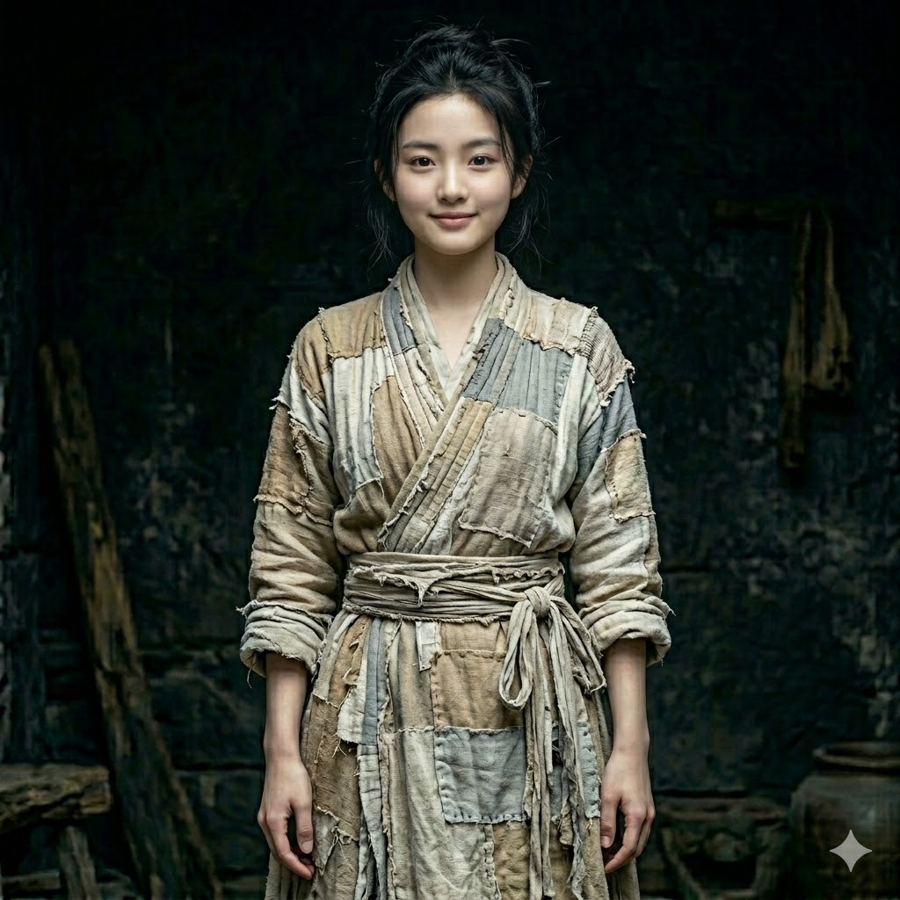

陆辰
孙满仓 → 林默 → 陆辰 · 不死兵王 · 文明导师
本名孙满仓，1933年生于东北。1945年在731部队焚化炉中异变获得量子态重置能力——不死。 在2056年人类末日之际，作为唯一能承受超时空跃迁的碳基生物，被送入时间通道。 经历七万四千G潮汐力的无尽撕裂后，坠入南宋绍兴年间的深山。 肉体从零重建，记忆断层，但2056年极道特种兵的杀戮本能刻入了每一根肌纤维。 被寡妇陆晓晓所救后，以"陆辰"之名开始了改写文明轨迹的征程。

陆晓晓
第一女主 · 南宋寡妇 · 绝境豪赌者 · 商贾千金
十九岁。落魄商贾千金，父母早亡后被村里"吃绝户"。 因被嫉妒与垂涎，新婚之日新郎被恶人设计引来官兵抓走充军，从此背负"克夫"恶名，沦为活死人般的"张寡妇"。 在深山中发现浑身赤裸、满地是血却毫无伤痕的陆辰，出于绝境中对"一个男人"的疯狂渴求，将他背回了家。 她的实用主义与不屈意志，是推动主角融入大宋的第一把钥匙。
赵嬛嬛
第二女主 · 帝国棋子 · 凤凰涅槃
大宋皇室的和亲工具，被送往异族的政治献祭品。 在看似柔弱的公主身份下，隐藏着不逊于任何帝王的野心与智略。 当她与陆辰的命运交汇，帝国的权力格局将迎来前所未有的震荡。 她是棋盘上最危险的棋子——因为她随时可能成为执棋之人。